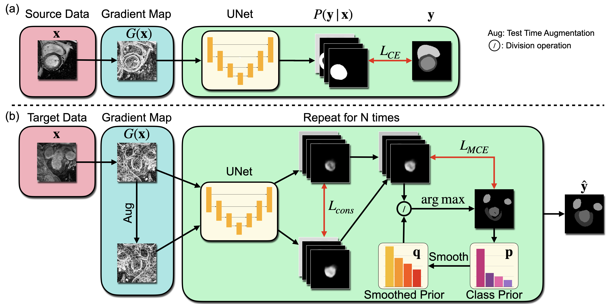
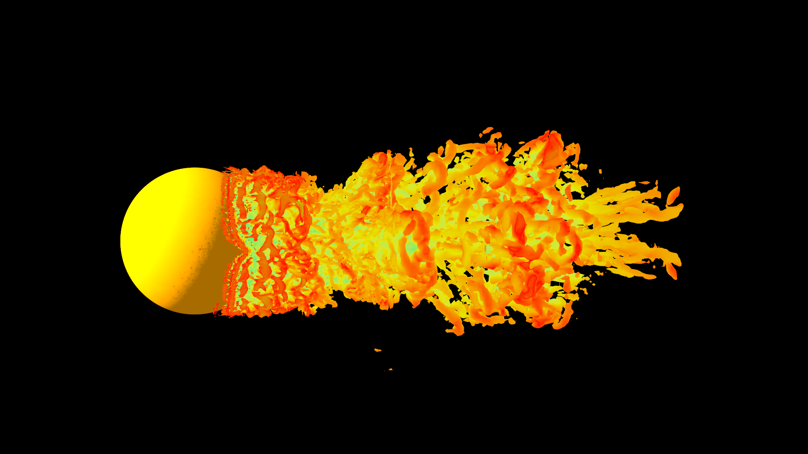
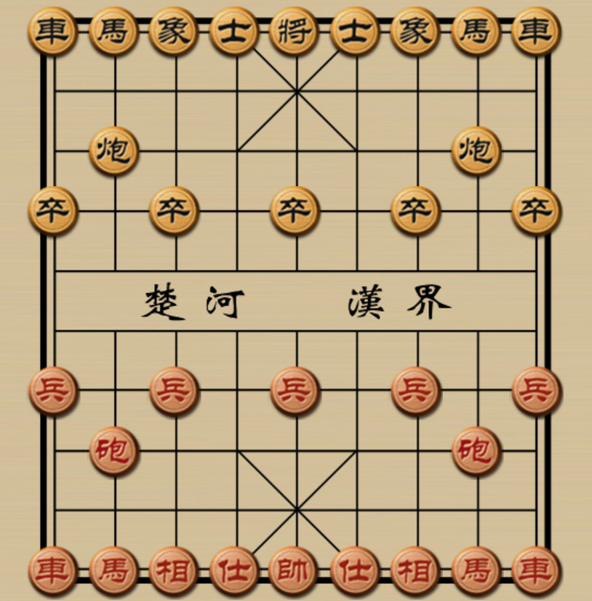
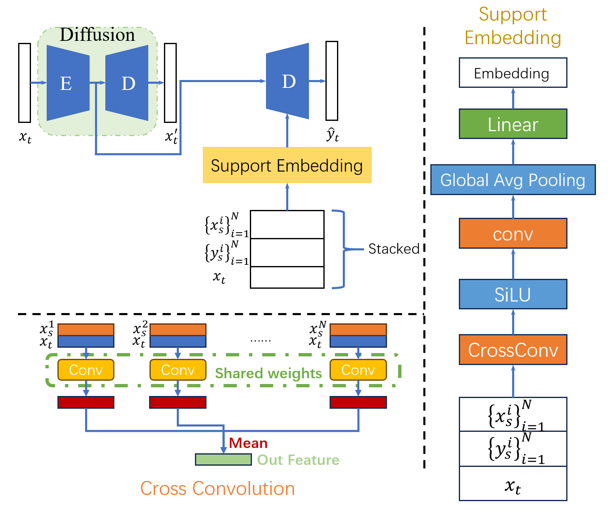

Bingnan LiPLUS Lab
Shanghai, China
|
 |

Biography
I am currently an undergraduate student at ShanghaiTech University in Shanghai, China. I am very fortunate to study in PLUS Lab and be advised by Prof. Xuming He. My scientific interests lie in computer vision and deep learning, mainly including domain generalization, multi-modal segmentation.
News
Publications
|  | Gradient-Map-Guided Adaptive Domain Generalization for Cross Modality MRI Segmentation (under
review) Bingnan Li, Zhitong Gao, Xuming He. Machine Learning for Health (ML4H), 2023. |
Patent
Projects
|  | Multi-Resolution Isosurface Rendering Bingnan Li, Suting Chen. Course project of CS171 Computer Graphics I. |
|  | Intelligence Strategy Exploration on Chinese Chess Bingnan Li, Suting Chen, Zeen Chi, Yifan Qin, Zhongxiao Cong Course project of CS181 Artificial Intelligence. |

|
Exploration on Novel View Synthesis with Generative Models Bingnan Li, Yifan Qin, Yan Zeng, Chongyu Wang, Yucen Peng, Zheng Chen Course project of CS272 Computer Vision II. |

|
Multi-resolution Blending via Gaussian and Laplacian Pyramid Bingnan Li, Hongyang Lin, Xinzhou Cong Course project of CS270 Digital Image Processing. |
|  | Few-Shot Semantic Segmentation Exploration with Diffusion Model Bingnan Li,Yifan Qin, Yan Zeng, Haoyuan Tian, Shuhao Zhang Course project of CS280 Deep Learning. |
Activities & Honors & Awards
-
Teaching Assistant | Mathematical Analysis II, Sep. 2021 -- Feb. 2022 -
Teaching Assistant | Discrete Mathematics, Feb. 2023 -- Jun. 2023 -
Research Assistant | PLUS Lab, 2022 -- Present -
Officer | New Media Department in Student Union, Sep. 2020 -- Sep. 2021 -
Team Leader | first Sichuan Liang Mountain social practice team, 2021 -
Volunteer | Shanghai Half Marathon, Apr. 2021 -
Volunteer | COVID-19 Campus Service, Mar. 2022 -- May. 2022 -
2020 Outstanding Officer of Student Union, 2021 -
Social Practice, Outstanding Individual, The Most Outstanding Team, Oct. 2021 -
Industrial Practice, Outstanding Individual, The Most Outstanding Team, Oct. 2022 -
Honored student of the School of Information Science and Technology. 2021, 2022
© Bingnan Li| Last updated: Oct 2023